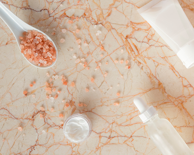

Errori
comuni
Piccoli gesti quotidiani che possono danneggiare la pelle senza che tu te ne accorga.
Scopri come riconoscerli e correggerli.
Una corretta routine di skincare è fundamental per mantenere la pelle sana e luminosa, ma spesso piccoli comportamenti quotidiani possono comprometterne l’efficacia. È importante conoscere le esigenze della propria pelle e adottare abitudini mirate, evitando eccessi o superficialità.
Scopri i sei errori di skincare più comuni
Conosci la tua pelle?
Ogni pelle ha esigenze diverse e non può essere trattata allo stesso modo. È importante scegliere prodotti adatti alla propria tipologia. Una skincare efficace si basa su consapevolezza, semplicità e costanza.
Usare un solo prodotto per tutto il viso
Spesso si tende a utilizzare gli stessi prodotti su tutto il viso, senza considerare che ogni zona ha esigenze diverse. Una skincare efficace deve adattarsi ai bisogni specifici della pelle per un risultato equilibrato e luminoso.
Eccedi con scrub e prodotti esfolianti?
L’esfoliazione aiuta a rinnovare la pelle eliminando impurità e cellule morte, ma deve essere delicata. Un uso eccessivo può irritare la pelle e alterarne l’equilibrio, rendendola più sensibile e impura.

Usi acqua troppo calda o fredda?
Usare acqua troppo calda o troppo fredda per lavare il viso può danneggiare la pelle e alterarne l’equilibrio. È preferibile utilizzare acqua tiepida, più delicata e adatta in ogni stagione.
Mantieni puliti i tuoi accessori?
Gli accessori per il trucco possono accumulare batteri e causare imperfezioni se non puliti correttamente. È importante mantenere una buona igiene, lavando mani, strumenti e asciugamani con regolarità.
Occhio agli UV tutto l’anno!
L’esposizione ai raggi UV è il principale fattore di invecchiamento della pelle, causando rughe e macchie. Per proteggere la pelle, è importante applicare ogni giorno una crema viso con SPF, anche in città o in montagna.


Prendersi cura della pelle significa più che seguire una routine: significa conoscere le proprie esigenze, rispettare
l’equilibrio naturale della cute e proteggersi dai fattori esterni.
Con consapevolezza, costanza e piccoli accorgimenti quotidiani, è possibile mantenere la pelle sana, luminosa e giovane nel tempo, valorizzando al massimo il proprio benessere e la propria bellezza naturale.
Scopri come prenderti cura della tua pelle con una routine personalizzata e i prodotti giusti per te.